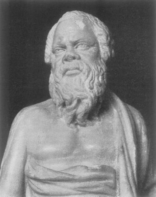

Σωκράτης

Εκείνο που ξεχώριζε το Σωκράτη από τους άλλους πνευματικούς ανθρώπους δεν ήταν οι γνώσεις του, αλλά η μέθοδος που ακολουθούσε για να φτάσει στην αλήθεια. Συγκεκριμένα, υποστήριζε ότι ο σωστός τρόπος για να φτάσει κάποιος στη λύση ενός ζητήματος, είναι να το προσεγγίσει χωρίς προκαταλήψεις, να το αντιμετωπίσει σαν να μην ξέρει τίποτε γι' αυτό. Δυστυχώς οι άνθρωποι δε βλέπουν έτσι τα πράγματα και γι' αυτό, πέφτουν θύματα των γνώσεων τους, που νομίζουν πως είναι ακριβείς.
Τον τρόπο με τον οποίο ο Σωκράτης αντιμετώπιζε τις φιλοσοφικές απορίες αντανακλά η ακόλουθη ιστορία. Σύμφωνα με μια ρήση του Μαντείου των Δελφών, ο Σωκράτης θεωρήθηκε ως ο πιο σοφός από όλους τους ανθρώπους. Όταν το πληροφορήθηκε αυτό ο Σωκράτης, απόρησε, γιατί ο ίδιος ήξερε ότι δεν είναι σοφός. Από την άλλη πλευρά όμως δεν μπορούσε να πιστέψει ότι ένας θεός θα έλεγε ποτέ ψέματα. Τι συνέβαινε λοιπόν; Ήταν ή δεν ήταν ο Σωκράτης ο πιο σοφός από τους ανθρώπους;
Προκειμένου να λύσει την απορία του αυτή, ο Σωκράτης αποφάσισε να επισκεφθεί ορισμένους φημισμένους για την σοφία τους ανθρώπους, για να δει τι ήξερε αυτός που ενδεχομένως δεν το γνώριζαν εκείνοι.
Επισκέπτηκε, λοιπόν κάποιους ανθρώπους οι οποίοι θεωρήτο σοφοί κατά κοινή ομολογία αλλά και που οι ίδιοι θεωρούσαν τους εαυτούς τους σοφούς. Συμπέρανε λοιπόν μετά από αυτές οι συναντήσεις ότι "μόνον ο Θεός είναι σοφός" ... και πως η σοφία των ανθρώπων είναι ελάχιστη, αν όχι ανύπαρκτη. Την αλήθεια αυτή την είχε ενστερνιστεί μόνο ο Σωκράτης που συνήθιζε να λέει "έν οίδα, ότι ουδέν οίδα".
Για το Σωκράτη η γνώση δεν είναι κάτι δεδομένο, έτοιμο και ανώδυνο. Απεναντίας, για την απόκτησή της απαιτείται μια επίπονη διαδικασία, όπως η μέθοδος που εισηγήθηκε. Ο Σωκράτης παρομοίαζε την προσπάθεια και την αγωνία για την κατάκτηση της γνώσης με τις ωδίνες του τοκετού. Όπως, για να γεννήσει η μάνα το παιδί, χρειάζεται τη συνδρομή της μαίας, έτσι και οι άνθρωποι έχουν ανάγκη από κάποιον που θα τους βοηθήσει να φτάσουν στην αλήθεια και την γνώση της.